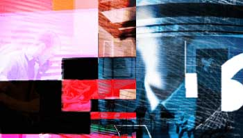
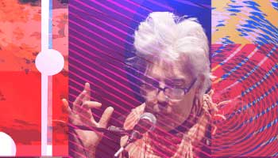
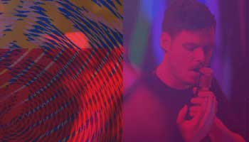
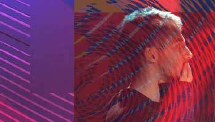
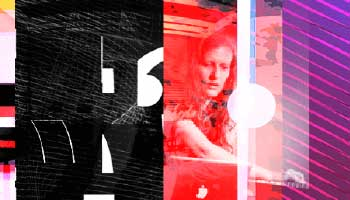
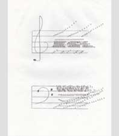

past performance |
|||
|
AVANT MUSIC FESTIVAL 2016 Avant Music Festival, the annual signature event of Avant Media, returns for the seventh time with its most adventurous installment yet. Comprising three large-scale performance/installation events on consecutive Saturdays, and a pair of Tuesday-evening Tangents concerts, as well as a gallery exhibition. showtimes & tickets:February 20 - March 5 Festival Pass: $50 Saturday, February 20 Noon – 10 PM Day Trip is a ten-hour performance/installation by Swedish composer Adrian Knight and the percussion trio TIGUE. Day Trip is a series of extended-duration musical pieces – five (plus an installation) by Knight and three by TIGUE – stitched together into a continuous production. The works include live performances, pre-recorded compositions and sine-tone installations. Day Trip is highlighted by the world premiere of Knight’s Occultations, co-commissioned by Avant Media and TIGUE for the occasion. Occultations combines micro-robotic toys (HexBugs) with traditional percussion instruments (floor toms and cymbals), and an ever-changing counterpoint sine-tone drone accompanied by a fog and light show. Saturday, February 27 at 8 PM Three 20-minute “micro-operas” by John King will be sung by his longtime collaborators Joan La Barbara and Gelsey Bell, with the composer on viola and electronics. The program features the world premiere of What Is The Word, based on Samuel Beckett’s last work. It also includes Ping (2014), also on a Beckett text, and A-R-S (2015), setting a Latin quote frequently cited by John Cage, an important influence: “ars imitatur naturam in sua operatione” (“art imitates nature in her manner of operation”). The hour-long performance of the three operas is preceded by a six-hour sound and light installation (noon - 6 pm,), based on the electronic component of A-R-S. Saturday, March 5 at 7 PM AMF 2016 closes with the world premiere of Gibson’s immersive drone-epic Apparitions of The Four Pillars in The Midwinter Starfield Symmetry in a setting of Quadrilateral Starfield Symmety A:L Base 11:273 in The 181 Profusion. Lasting between three and four hours, it is played by a sextet with voices and instruments, underpinned throughout by a harmonically complex drone rooted in a 72 hz (low ‘D’) fundamental tone. It is accompanied by a new video work by Gibson, Quadrilateral Starfield Symmetry A:L Base 11:273, consisting of luminous, slowly evolving geometrical forms that transform symmetrically along four axes. The Quadrilateral Starfield Symmetry A:L Base 11:273 video will be installed in the Wild Project space on Friday, March 4 (5 - 9 pm), and Saturday, March 5 (noon – 4 pm), accompanied by Gibson’s drone work The 27:28 Triple Octave Displacement. Admission is free. TANGENTS Tuesday, February 23 at 8 PM World premiere of composer/percussionist Jude Traxler’s virtuosic Blowback (and other mishaps), for percussion quartet and “roaming click track,” performed by Mangobot. Recreating digital effects through acoustic phenomena, each performer's computer-controlled click track moves ever so slightly to mimic reverb, flanger and reverse-delay effects live. As the piece plays out, these effects are varied and enhanced: very close relationships create stutter effects, while longer phase distances create sweeping reverb tails. This virtuosic work demands great concentration and rhythmic precision, and promises to deliver a rare sonic experience. Tuesday, March 1 at 8 PM Robotica is an evening-length solo show inspired by the work of Al-Jazari, the 13th century Mesopotamian inventor and author of the “Book of Knowledge of Ingenious Mechanical Devices.” Drawings from Al-Jazari’s book are projected in the background as Naphtali uses a Wii controller to direct the robots, rhythms, and processing of her voice in real time, via algorithms and computer programs she wrote for the project. The program features the world premiere of two new songs written especially for the performance. Naphtali’s themes include “technological angst, memories (past and future), machine codes, surveillance and the breakdown of communication.” ART EXHIBITION In conjunction with AMF 2016, an exhibition of works by Kathleen White, created in dialog with the traditions of musical notation, will be on view in Wild Project’s gallery space. The presentation includes a selection of Ms. White’s Sound Text drawings alongside a collaborative sound piece created with her partner Rafael Sánchez. Curated by Conrad Ventur in conversation with the Estate of Kathleen White. |
upcoming performances |
|||
 |
|||
| EVQ Film Festival 2018 August 20-25 |
|||
performance archives |
|||
| 2018 | 2017 | 2016 | 2015 |
| 2014 | 2013 | 2012 | 2011 |
| 2010 | 2009 | 2008 | 2007 |